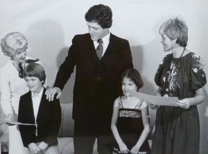
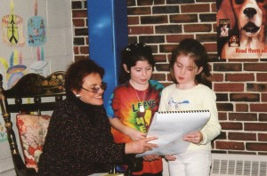

Q&A About Writing
Q: Is it fun to be a writer?
A: Yes! Especially because I get to write about things I love and people who are important. It makes me very happy when children and adults read my books, because they are learning about things that I care about.
I Iove writing but sometimes it’s a lonely job. I can’t write in a room full of people, though I sometimes get an idea that I write down in my notebook wherever I am. I have to be alone to write.
Q: What will your next book be about?
A: I’m thinking of writing a book about my adventures. One of my best adventures was riding on the back of an elephant to see wild tigers in India.
Tigers are afraid of elephants, thank goodness.
Q: Do you like to get letters and e-mails?
A: Yes indeed. I answer all my mail. Send me a message by going to Contact Me. If a whole class writes to me, I’ll write one letter back.
Q: How do I buy your books?
A: It’s very easy. Go to Books on this website. My books are divided into different categories. Each book will have a link to either Amazon or Paypal. Happy reading!
Q: Will you send me one of your books for free?
A: I wish I could. Do you know that every author only gets 10 to 20 copies of each book they write? If I want more copies, I have to buy them, like everyone else. I have a big family so I end up spending my own money for my books. If you can’t buy books, go to your local public library. My books are there and the librarian can help you find them – for free!
Q: How can my school find out about your school visits?
A: Visit my section in Teachers and Librarians called School Visits. You can also read what kids and teachers have said about my school visits in Praise for School Visits.

Future President Bill Clinton came to my school visit in Arkansas.
Q: How much money do you make?
A: Let’s say a book sells for $6.00. An author’s share may be 10%. That’s $0.60 cents. If the book sells 100 copies, the author will make $60.00. If I’ve written a picture book, the illustrator gets half of what I make on each book. That gives the artist $0.30 cents and I get $0.30 cents. I’m happy when my books sell many copies because it means more children are enjoying my books.
Q: Where do you write?
A: I’ve written on airplanes and trains. I’ve written underwater on a special waterproof slate with a pen that writes beneath the sea!
When I’m home, I write on my computer in my office, which faces a busy New York street. In nice weather, I take a notebook to Central Park and sit on a bench, near flowers, and write or read for research. I always carry a notebook with me. I hear the strangest things in the subway and on buses. You never know when and where an idea will strike you. Sometimes I wake up in the middle of the night and write down an idea that has just come to me in a dream.
Q: How long does it take you to write a book?
A: For the IF YOU LIVED history books, biographies and other non-fiction books, I do a year of research and reading. The writing takes almost another year. I re-write everything, sometimes 25 times! Picture books take a shorter time, and I re-write those, too.
Q: What’s the best part of being a writer?
A: Meeting children, teachers and librarians when I visit schools!

Two girls show me the book they wrote and illustrated.


{kind=link}
{kind=link}
{kind=link}
{kind=link}